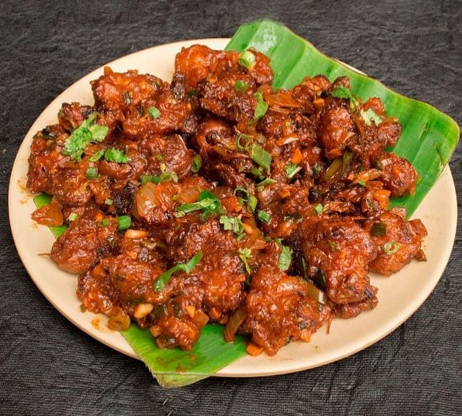

Cultural Celebration in Tamil Nadu!

Pongal
Karthigai Deepam
Natyanjali Festival

Did you know?
Tamil Nadu has more temples than any other Indian state, with over 38,000 ancient shrines! üõï
The Flavors of Tamil Nadu!

Sambar-Dosa

Chettinad Chicken
Filter Coffee
Did you know?
Tamil cuisine is one of the oldest in the world ‚Äî rich in spices, rice, and lentils üçõ
Explore the Wonders of Tamil Nadu!
Meenakshi Temple
Mahabalipuram
Kodaikanal
Did you know?
Tamil Nadu is home to India's oldest classical language ‚Äî Tamil ‚Äî which is over 2,000 years old! üìú